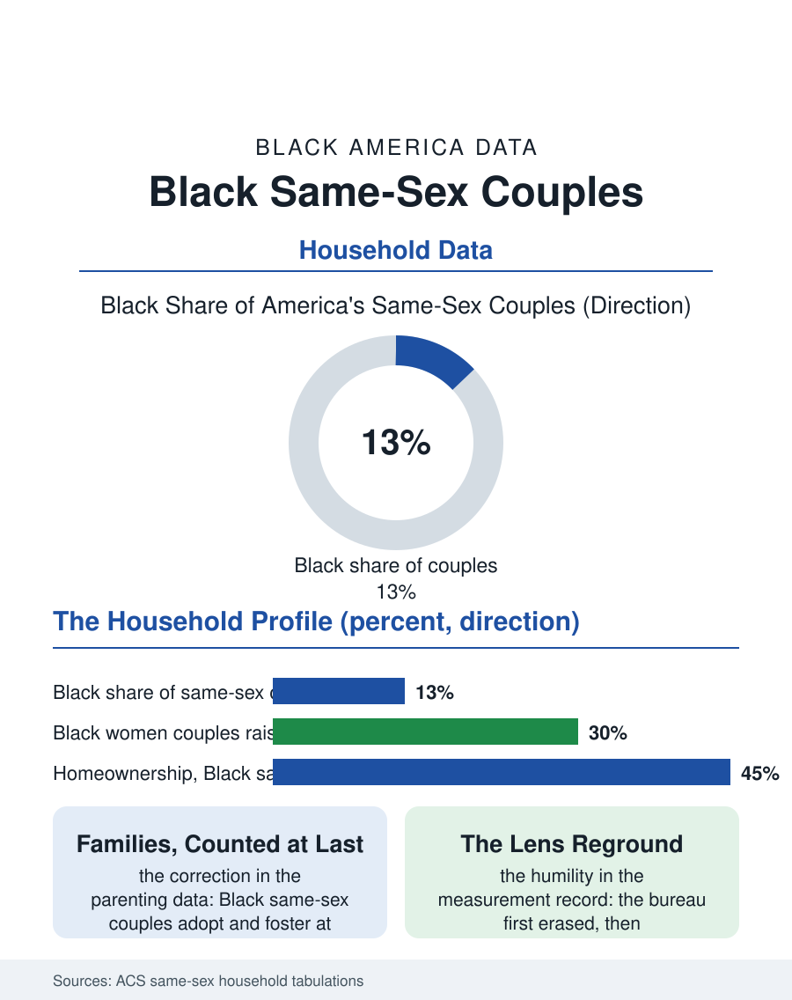

Black Census
Counted at Last: Black Same-Sex Couples in the Census
Several hundred thousand Black Americans in same-sex couples, raising children and holding mortgages, enumerated precisely only after the form learned how. The couples file.

The census counts several hundred thousand Black Americans living in same-sex couples, a population the bureau has enumerated with increasing precision since it began tabulating same-sex households, through the unmarried-partner era's approximations to the direct spouse questions of the modern form. This article reads the same-sex couples file, a small population whose measurement history is itself a document of the census's evolution.
Counting What the Form Once Could Not
The measurement history runs through the bureau's own corrections. Before the forms allowed a same-sex spouse to be recorded as one, the bureau reclassified such responses, and the population appeared only through the unmarried partner category, undercounted and demographically blurred; the modern instruments, the redesigned relationship question and the bureau's dedicated tabulations, count married and unmarried same-sex couples directly, and the Black share of the total tracks at roughly the population's proportion, with the geographic distribution following the atlas's general map, weighted toward the large metros and the South alike. The household data show the couples distributed across the family files' whole range: raising children at rates that surprise the stereotype, since a substantial share of Black same-sex couples, particularly women couples, are parenting, many through the kinship and prior-relationship pathways the family data record, with household incomes that split by gender in the pattern the earnings files predict, women couples' households earning less than men couples', both groups' medians falling below the different-sex married benchmark the household income tables set, a gap the literature attributes to the compounding of the gender pay structure and the racial one inside a two-earner form. Homeownership, tenure, and the migration patterns of the couples fill the standard tables with the same structure: a population statistically ordinary in its economics and distinctive mainly in the history of its miscounting.
Families in the Data
The parenting data deserve their own paragraph in the bureau's own findings, because they correct the public picture in both directions. Black same-sex couples adopt and foster at notable rates within the child welfare data, the adoption file's gay and lesbian parents being disproportionately Black relative to the couples population, and the children in these households are overwhelmingly children of color, so that the same-sex household file and the transracial adoption debates proceed on different demographic facts than their public versions assume. The legal era's transitions appear in the series as the marriage wave the marital files record, the couples' transition from unmarried to married status across the 2010s occurring in the Black data on the same schedule as the general population's, and the elder file holds its own chapter: the long-term couples who survived the era before recognition, now aging into the widowhood and caregiving files with marriages solemnized late and histories longer than their legal documents, a cohort whose relationship durations the census's marital clocks systematically understate. The community layer, the Black gay and lesbian institutions, the prides and the houses and the churches of affirmation, sits beneath the household data largely uncounted by the bureau, whose instruments see couples and miss cultures, a limitation the file acknowledges as the price of its method.
The Table and Its Limits
The same-sex couples file is therefore two documents: the population the bureau now counts well, several hundred thousand Black Americans in coupled households, raising children, holding mortgages, aging, at medians the tables report with the same neutrality as every other household form in this atlas, and the history of the count itself, in which a federal instrument first erased, then approximated, then enumerated a population whose existence its categories were built without. The file's closing note belongs to demography's humility: every category in the census is a decision, and the decisions change slower than the population does, so that the files of this atlas are all, to a degree the bureau would endorse, photographs of a moving subject through a lens ground in an earlier decade. The couples file simply carries the clearest record of the lens being reground. The census counts the couples now, in their hundreds of thousands, and the count improves each cycle. The population, on its own data, was there all along, in the households the forms called something else, which is the oldest story the census files tell about every community in these pages, in every era, including this sentence's subject and its author alike.
More in Black Census
The Black Population of the United States: Size, Definitions, and Distribution
The Black population of the United States totals 52.8 million — 15.4 percent of the nation. How the Census Bureau defines and counts the population, and where it lives.
Black Median Household Income in the United States
Black median household income stands at $56,490 in the Census Bureau's annual income report — how the figure is measured, how it compares, and what drives it.
The Black Poverty Rate: Levels, Children, and the Long Trend
The official Black poverty rate is 17.1 percent — against 11.1 percent nationally and 7.7 percent for non-Hispanic White Americans. How poverty is measured and what the data show.
Source: U.S. Census Bureau, American Community Survey same-sex household tabulations; Williams Institute analyses of census data.